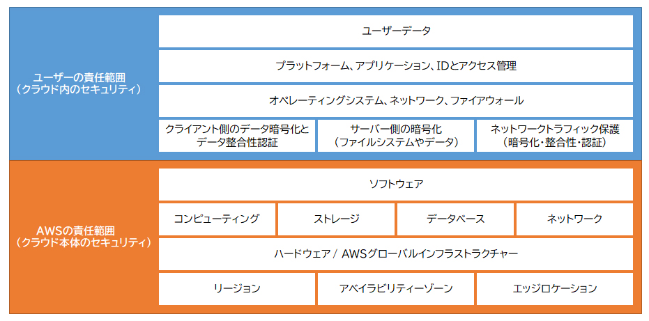
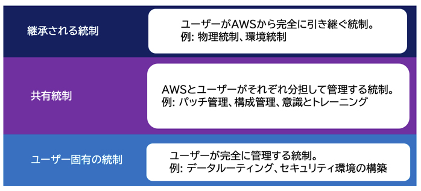

🤝 責任共有モデル CLF
AWSのセキュリティの考え方は、セキュリティ対策の責任をAWSとユーザーで分担する
「責任共有モデル」です。
AWSとユーザーの責任領域は、ユーザーが利用するAWSクラウドサービスに応じて変わります。
AWSが提供するクラウドサービスの領域はAWSがセキュリティ対策の責任を持ち、
クラウドサービスを利用する上でユーザーが設定・変更できる領域はユーザーがセキュリティ対策の責任を持ちます。
責任共有モデルのイメージ

責任の分担
- AWSのサービスが稼働するハードウェアのセキュリティ対策
- AWSのサービスが稼働するデータセンターのセキュリティ対策
- ハイパーバイザー（ホストOS）※のパッチ適用・セキュリティ対策
※「ハイパーバイザー（ホストOS）」とは、仮想化環境を実現するための土台となる仮想化ソフトウェアやOSのことです。また、ハイパーバイザーなどの仮想環境上で動作するOSのことを「ゲストOS」といいます。
- AWSサービスを利用するにあたって作成した認証情報（IAMユーザー、IAMロールなど）
- AWSサービスへのアクセス管理
- AWSサービス上のユーザーデータやログ
- ゲストOSのパッチ適用・セキュリティ対策
サービス別の責任範囲
| 責任項目 | IaaS (EC2) | PaaS (RDS) | SaaS (S3) |
|---|---|---|---|
| 物理ハードウェア | AWS | AWS | AWS |
| ハイパーバイザー | AWS | AWS | AWS |
| OS（ゲストOS）パッチ | ユーザー | AWS | AWS（管理不要） |
| アプリケーション | ユーザー | ユーザー | AWS |
| データ・暗号化 | ユーザー | ユーザー | ユーザー |
| IAM・アクセス管理 | ユーザー | ユーザー | ユーザー |
| ネットワーク設定（VPC等） | ユーザー | ユーザー | ユーザー |
IT統制への適用
AWSの責任共有モデルは、IT統制にも適用されます。ここでいう「統制」とは、IT環境やセキュリティを管理・監査するためのプロセスや方法を意味します。AWSとユーザーは、それぞれ異なる責任を持ち、協力して統制を行います。

AWSが提供するインフラストラクチャやサービスに関する統制のうち、ユーザーが完全に引き継ぐ統制のことです。AWSは物理的なインフラや環境の管理を担当し、ユーザーはそれに関連する統制を引き継ぎます。
- 物理統制：AWSは自身のデータセンターにおける物理的なセキュリティを管理
- 環境統制：データセンター内の温湿度管理・電力供給・冷却システムの監視
AWSとユーザーがそれぞれの役割に基づいて分担して管理する統制です。
- パッチ管理：AWSはインフラのパッチ適用を担当、ユーザーはゲストOSやアプリのパッチを担当
- 構成管理：AWSはインフラの構成管理、ユーザーはゲストOSやアプリの構成を担当
- 意識とトレーニング：AWSはAWS従業員へのセキュリティトレーニングを提供、ユーザーは自社従業員へのトレーニングを実施
特定のセキュリティ要件に基づき、ユーザーが完全に管理する統制です。
例えば、ユーザーが自身のセキュリティ要件に従い、データを特定のセキュリティ環境内でルーティングまたは区分けする必要がある場合、これらの統制はユーザーの責任となります。
- EC2のゲストOSパッチ適用はユーザー責任（RDSはAWS責任）— この違いは必ず覚える
- データの暗号化・アクセス管理は常にユーザー責任 — どのサービスを使っても変わらない
- IAMユーザー・IAMロールの管理はユーザー責任
- 物理インフラ（サーバー・データセンター）はAWS責任
- マネージドサービス（RDS, S3, DynamoDB）ほどAWSの責任範囲が広くなる
- 「責任共有モデルにより、AWSがOSのパッチ適用を行う」→ EC2の場合は誤り（ユーザー責任）